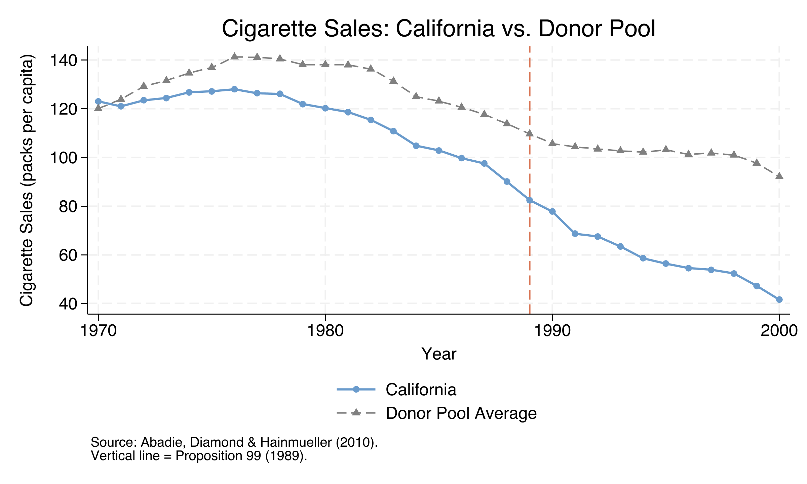
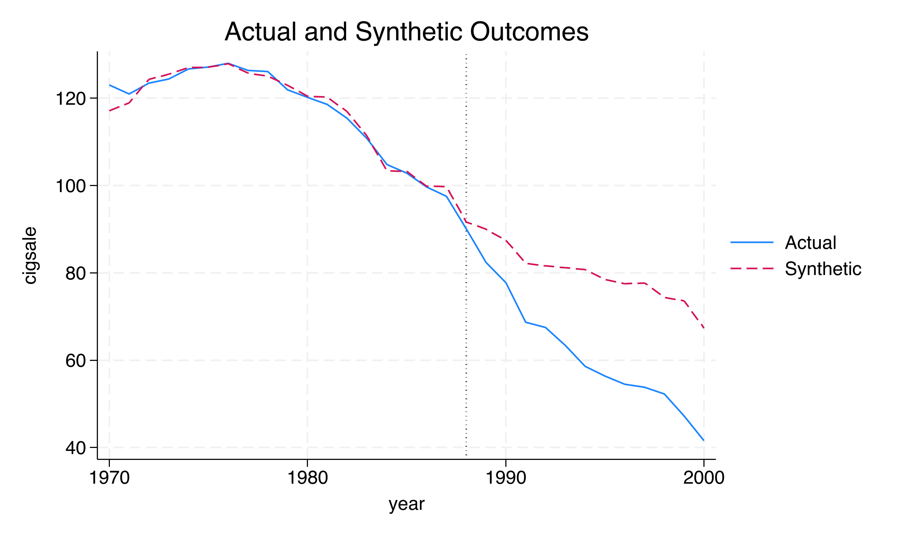
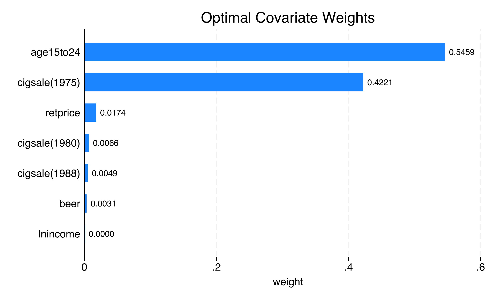
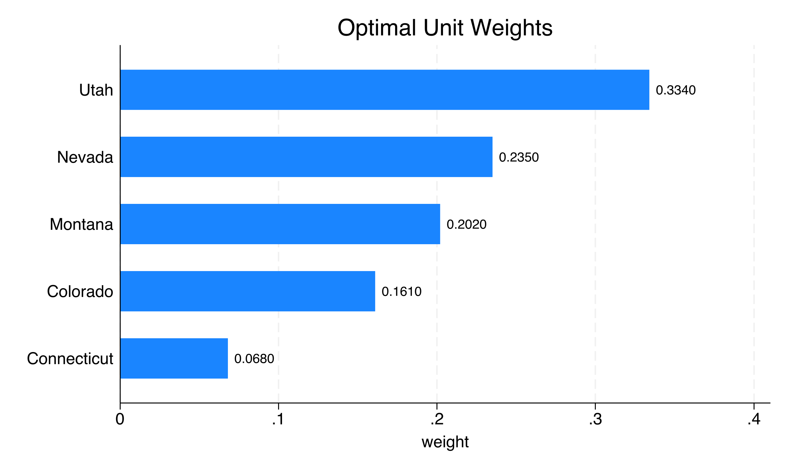
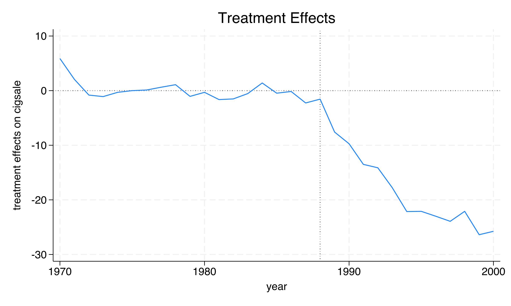
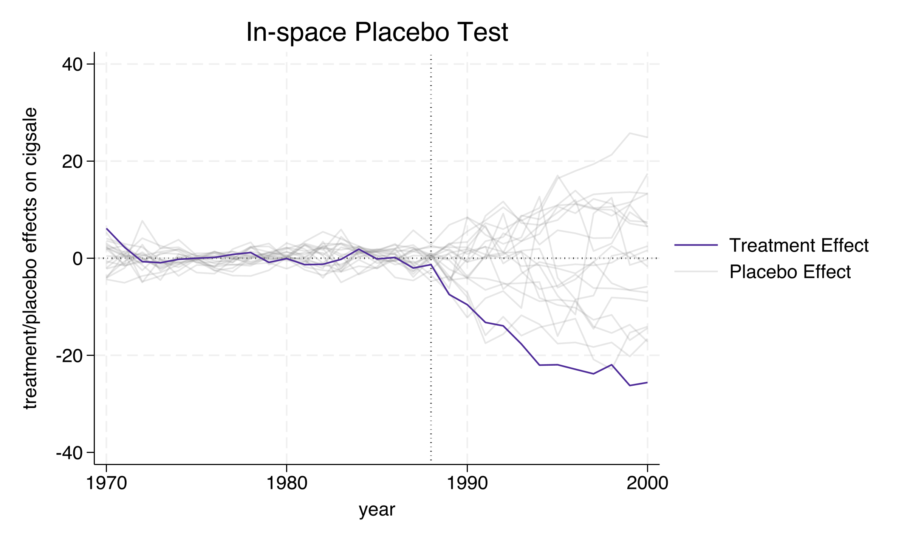
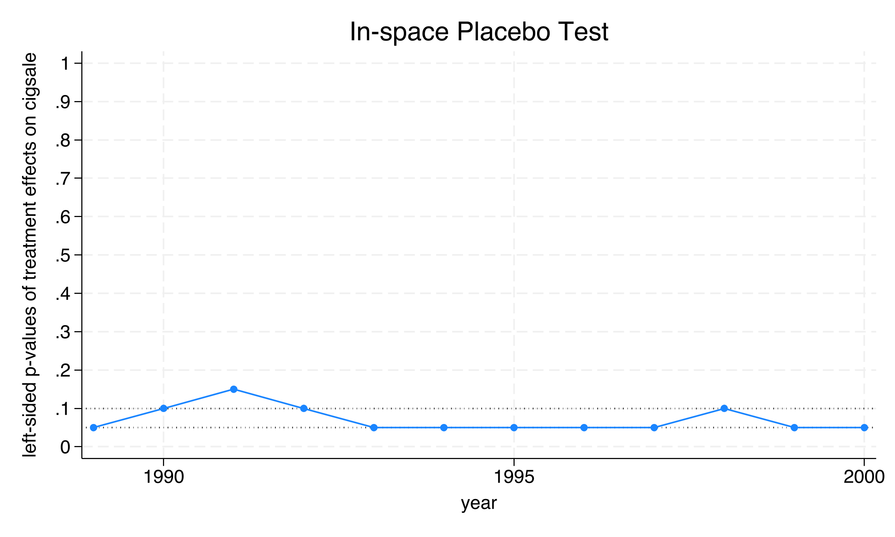
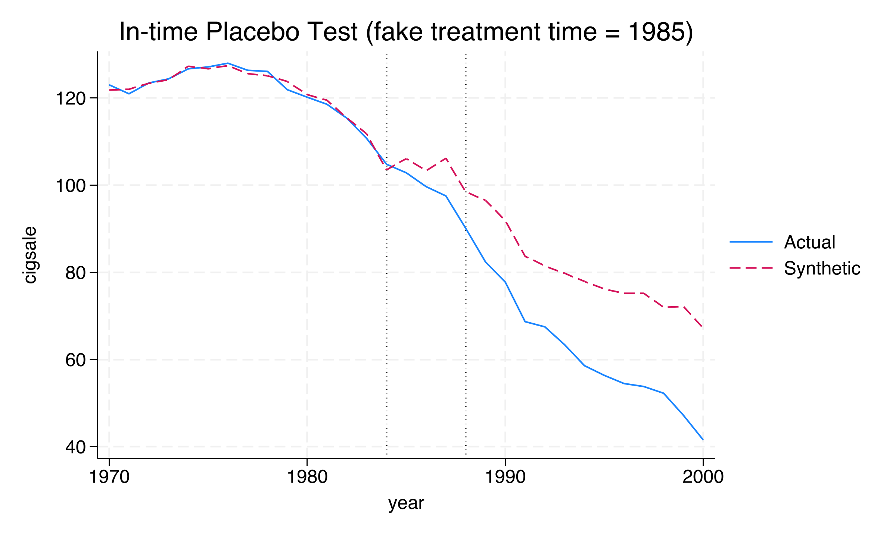
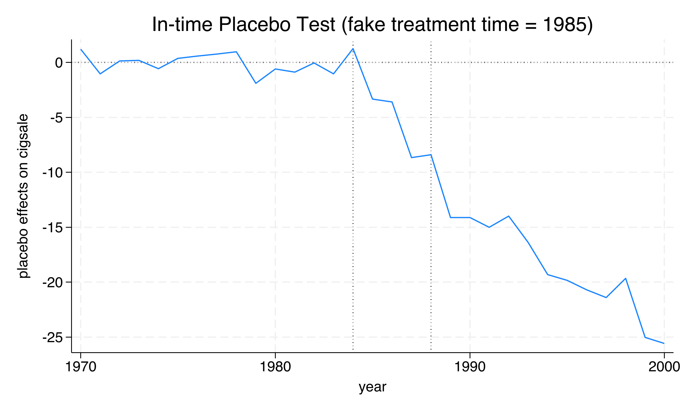
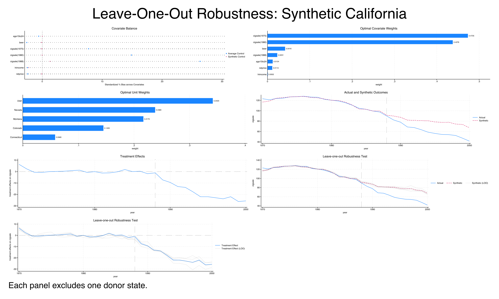

Did Proposition 99 cut smoking in California?
Nagoya University (GSID)
October 5, 2026
Act I
In 1988, California voters passed Proposition 99, effective January 1989. It raised the cigarette tax by 25 cents per pack. It also funded anti-smoking education.
Yet cigarette sales were already falling nationwide. In California, the decline began in the late 1970s. What would California have done without the law?

Cigarette sales per capita, 1970–2000: California (solid blue) versus the unweighted average of 38 control states (dashed gray). The orange line marks Proposition 99 (1989).
synth2, a weighted blend of donor statesAct II
cigsale, cigarette sales per capita (packs)cigsale in 1975, 1980, and 1988Strongly balanced panel: 1,209 observations, 19 pre-treatment years, and 12 post-treatment years. The estimand is the ATT for California, the one treated unit, not the ATE.
\[\min_{W} \sum_{m=1}^{M} v_m \left( X_{1m} - \sum_{j=2}^{J+1} w_j X_{jm} \right)^2\]
We pick donor weights \(w_j \ge 0\) that sum to one and match the predictors \(X_{1m}\) of California. The weights \(v_m\) set how much each predictor matters. The solution is the closest feasible blend of donors.
The synthetic control is a convex combination of real states, so it never extrapolates beyond the donor pool.
\[\hat{\tau}_t = Y_{1t} - \sum_{j=2}^{J+1} w_j^* Y_{jt}\]
The effect in year \(t\) is actual minus synthetic sales. A negative \(\hat{\tau}_t\) means that the law lowered sales. Each year from 1989 to 2000 yields one such gap.
Identification rests on good pre-treatment fit, no interference, no anticipation, and no donor contamination; only the fit is directly visible in the data.
synth2 call fits the baseline synthetic controltrunit(3) = California · trperiod(1989) = treatment year · nested = outer V / inner W · allopt = multiple starts to avoid local optima.

Actual versus synthetic California, 1970–2000: close before 1989 apart from 1970, then a widening gap.

Predictor (V-matrix) weights: how much each predictor counts in the matching distance.

Donor weights: the five states that compose synthetic California (33 others get a reported weight of zero).
−19.00
average ATT, packs per capita / yr (1989–2000); −7.59 in 1989 deepening to −26.37 by 1999

Treatment effect (actual minus synthetic California) over time; the negative gap widens after 1989.
Act III
| State | Pre MSPE | Post/Pre MSPE |
|---|---|---|
| California | 3.17 | 123.5 |
| Georgia | 1.46 | 80.0 |
| Virginia | 2.78 | 79.0 |
| Missouri | 1.20 | 70.9 |
The post/pre MSPE ratio asks how much worse the fit becomes after 1989 than before. California has the highest ratio, well above the runner-up.

Gaps for California (purple) and the 19 placebo states retained by cut(2): the lines overlap near zero before 1989, and California falls below almost every placebo afterward.
0.026
in-space placebo p-value, all controls (1/39); p = 0.050 after the cut(2) fit filter (1/20)

Left-sided permutation p-values over time (left-sided, because the effect is negative): p = 0.050 in most years.

In-time placebo: actual versus synthetic California with a fake treatment in 1985. A modest gap opens during 1985–1988, and the lines split much further after the real 1989 policy.

In-time placebo effect: smaller gaps during the fake 1985–1988 window, larger gaps after the real 1989 treatment.

Leave-one-out output in seven panels. In the last two, each gray line drops one weighted donor, and the paths stay close to the full-pool fit.
Objection. A data-driven counterfactual is still a model. It cannot manufacture identification. Pre-1989 fit does not guarantee post-1989 validity.
Response. Correct. The ATT is credible only under no interference, no anticipation, no donor contamination, and good pre-treatment fit. SCM makes the last condition visible and disciplines the comparator. It cannot rule out cross-border shopping or an idiosyncratic donor such as Utah. It also gives no standard errors, so inference rests on the placebos.